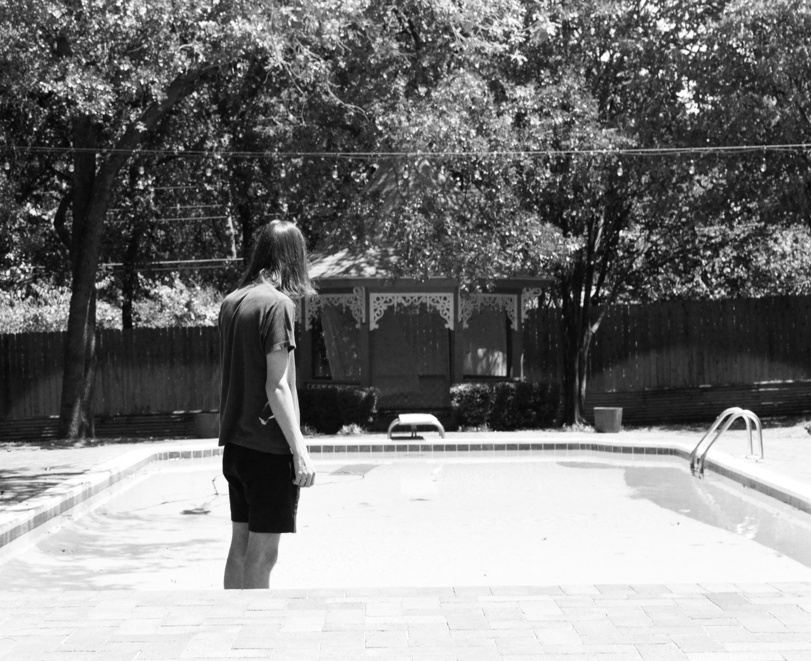

About

I am a senior in software engineering at Rose-Hulman Institute of Technology. When it comes to software engineering, I have been programming since the age of 10 when he got his first computer. I have created and contributed to many group projects, and competed with his high school's programming team.
Outside of software engineering, My interests include but not limited to: audio engineering, bowling, drone racing, electronic repair, and film photography. I founded a high school club based around designing and building musical synthesizers and I am the president of Rose-Hulman's WMHD live and recorded music club.